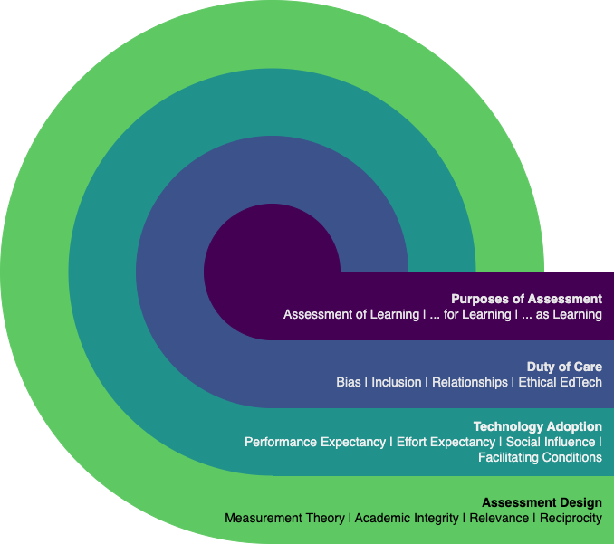

Technology-Integrated Assessment in BC Higher Education
In the fall of 2021, I embarked on the BCcampus Student Research Fellowship, an 18-month project funded by BCcampus intended to promote research on teaching and learning in BC. My project aimed at technology-integrated assessment practices in higher education, a topic of significant concern due to the COVID-19 pandemic, and also of more recent concern in light of generative AI models. The fellowship provided funding and support for a component of my PhD dissertation research at the University of Victoria, where I am supervised by Dr. Valerie Irvine. My research is ongoing, but I am pleased to report that I have hit a milestone in completing and publishing the first two of three papers that will form my dissertation.
I’m grateful to BCcampus, especially Leva Lee, Britt Dzioba, Rebecca Shortt, and Gwen Nguyen, who each provided opportunities for this cohort of fellows to meet, share challenges and successes, connect along the journey, and sometimes, just ‘Shut up and Write.’ Grad school can be an isolating time, and this was one of the things magnified by COVID-19 restrictions. I am fortunate that I and my fellow grad students and faculty in Educational Technology at UVic have enjoyed strong collaborative relationships, but it was also good to connect with others from other BC institutions through the fellowship. The fellowship process and journey also provided much needed funding for my project. There are unique challenges associated with being a PhD student with work and family obligations, and being able to provide funding toward the research process, including compensation for time spent for participants and travel to conferences, is critical.
Aside from these logistical supports, though, are the actual outcomes of my research. The first paper is a literature review exploring how higher education instructors integrate technology and assessment (Madland et al., 2024b). We purposely explored papers written by those who do not study assessment as a disciplinary area, but who are instructors in a wide variety of disciplines and who are compelled for one reason or another to use technology when they assess learning. We explored these articles through the lens of the assessment design in a digital world framework published by Bearman et al. (2022). While there were areas of overlap between the literature and the Bearman et al. framework (primarily the importance of understanding the different purposes of assessment), there were also themes that emerged in the literature that are not modeled in the framework (e.g., instructor workload, academic integrity), and there were components of the framework that were not evident in the literature (e.g., digital literacies). These points of incongruity suggested a need for revisions to the model which led to a process of envisioning what a model of technology-integrated assessment might look like.
The technology-integrated assessment framework, described in the second paper (Madland et al., 2024a), is the result of this envisioning process and serves as a good anchor point in beginning to understand how to improve technology-integrated assessment practices in higher education in British Columbia and beyond. The technology-integrated assessment framework consists of four components, which might be considered to be four factors that instructors might consider when planning assessment. The four factors and their sub-factors are:
- The purposes of assessment
- Assessment of Learning
- Assessment for Learning
- Assessment as Learning
- Duty of Care
- Bias
- Inclusion
- Relationships
- Ethical EdTech
- Technology Acceptance
- Performance Expectancy
- Effort Expectancy
- Social Influences
- Facilitating Conditions
- Assessment Design
- Measurement Theory
- Academic Integrity
- Relevance
- Reciprocity
Figure 1 is a theoretical conceptualization of the model and its sub-components.

Note: From Madland, C., Irvine, V., DeLuca, C., & Bulut, O. (2024). Developing the Technology-Integrated Assessment Framework. The Open/Technology in Education, Society, and Scholarship Association Journal, 4(1), 1–19. https://doi.org/10.18357/otessaj.2024.4.1.63. Used under the permissions of the original Creative Commons license (CC-BY).
We were intentional about considering the framework in light of the 5Rs of Indigenous education: respect, relevance, reciprocity, responsibility, and relationships Kirkness & Barnhardt (1991). Respect and responsibility are embedded in the ‘Duty of Care’ component while relationships, reciprocity, and relevance are explicit in the framework. Further work is coming and will focus on exploring the relationships between the factors and sub-factors in the framework.
I’m grateful to my supervisor, Dr. Valerie Irvine, for her keen insight and expert guidance, as well as my committee members, Dr. Chris DeLuca (Queen’s University), and Dr. Okan Bulut (University of Alberta). I am also appreciative to BCcampus for their support through the BCcampus Student Fellowship program, which provides B.C. post-secondary educators and students with funding to conduct small-scale research on teaching and learning, as well as explore evidence-based teaching practices that focus on student success and learning.